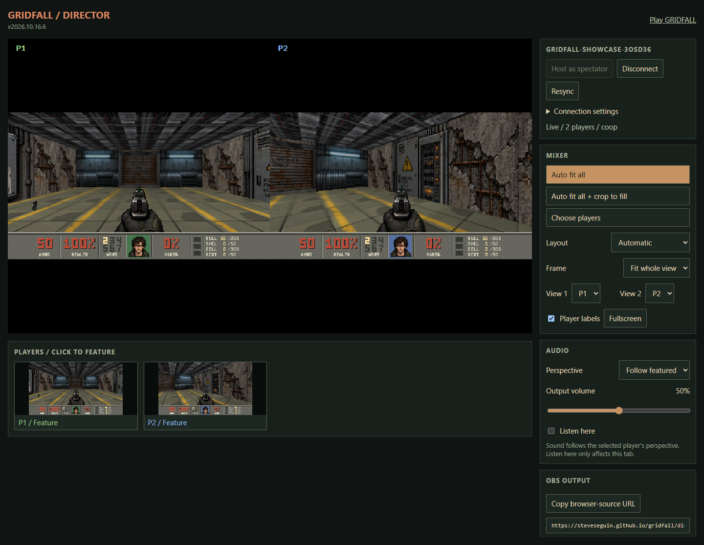

Host and join a game
Everyone needs the same game build, room name, password if one is set, and VDO.Ninja connection server. The public game uses https://vdo.ninja/ by default. To use another installation, open Connection settings before connecting. Generated invite links carry these settings.
- Open GRIDFALL and choose Multiplayer → Host a game.
- Enter a room name, or leave it blank to generate one. Choose Co-op or Deathmatch. Open More options for the starting map, difficulty and optional room password.
- Choose Start game. You can play immediately; friends can join during the match.
- Press Esc, open Multiplayer → Invite link, and copy the link with Ctrl+C. Friends open it and choose Join room. They can also choose Join a game and enter the same settings manually.
Keep the host tab open. Opening the menu does not pause multiplayer. Use Enter for text chat and Space to respawn after dying. On touch devices, use CHAT and USE. Players can leave through Quit to main menu.
| Game mode | How it plays |
|---|---|
| Co-op | Fight through the campaign together. Keys are shared and ordinary friendly fire is disabled. Players start near the map entrance; telefrags can still clear an occupied teleport exit. |
| Deathmatch | Fight other players, track frags, and respawn at deathmatch starts. Monsters are removed and players have all keys. |
Placed weapons remain available for each player; ordinary supplies are consumed when collected. The host can change Multiplayer → Match settings and choose Restart match. Restarting begins a fresh match configuration for the connected room.
For players on different computers, share the hosted HTTPS address. A localhost invite points each person at their own computer. Share password-bearing invites only with the people you want in the room.
Choose the right page and role
| Role | What it does | Player slots |
|---|---|---|
| Player hosting | The game page runs the authoritative match and lets the host play. | Uses one of four |
| Joining player | The game page joins the host and controls one character. | Uses one of four |
| Director: Watch room | Watches an existing match, renders player perspectives, and controls a broadcast layout. | Uses none |
| Director: Host as spectator | Runs the authoritative match and director controls without playing. | All four remain available |
| Clean output / OBS | Displays the director's chosen layout without its controls. Connects independently as a spectator. | Uses none |
For a four-player broadcast with a separate operator, have the operator choose Host as spectator, then Copy player invite. The director's Host settings selects the map, difficulty and game mode; Restart match applies changes after hosting begins. Keep that director tab open for the entire match. The world pauses while this kind of room has no players and resumes when someone joins.
For a casual game, let a player host and open a separate director to watch. Closing a watching director does not end the match; closing whichever page is hosting interrupts it. The clean output page cannot host or take over a match.
Watch and arrange player views
Choose Open director room in the host's multiplayer menu, or open the director, enter the room settings, and select Watch room. You can connect before the host starts; the director waits for the match.

| Control | Use it to… |
|---|---|
| Auto fit all | Include all connected players and preserve their whole views. Two views sit side by side; larger groups use a grid. |
| Auto fit all + crop to fill | Include all players and fill each tile. Cropping can cut off edges and parts of the HUD. |
| Choose players | Select particular player slots. The selection remains when a player leaves and when that slot becomes occupied again. |
| Layout | Choose Automatic, Side by side, Stacked, Grid, or Featured + others. The featured layout gives the first view a larger area. |
| Frame | Choose Fit whole view to retain the HUD, or Crop to fill to fill the tile. |
| View selectors | Reorder player perspectives. The first visible view is the featured audio perspective. |
| Player previews | Click a preview to show that player alone. Choose Auto fit all or select multiple players to return to a combined view. |
| Player labels / Fullscreen | Toggle the P1–P4 labels or expand the program picture. |
Audio follows a perspective
Follow featured uses the first visible player's game sound effects. Select a fixed player to keep that perspective while changing the picture, or choose None / mute. A selected player who is absent produces silence. Output volume sets the program level; Listen here only enables monitoring in the director tab.
The director generates game sound effects locally. It does not capture players' microphones, browser audio, or their selected music tracks. Add commentary and any separate music through your broadcasting setup.
Add the clean output to OBS
- Connect the director, choose your layout and audio perspective, and click Copy browser-source URL.
- In OBS, add a Browser Source, paste the URL, and set its dimensions to 1280 × 720.
- If audio is silent, open the source's Interact window and click the picture to allow playback. Also check the director's perspective and output volume.
- Leave the director open to change the output live. Change views, ordering, labels, crop and audio there; the output follows the matching director.
The clean output is the broadcast view, sometimes called an overlay. It contains the game picture and HUD, with an opaque black background around fitted views. Position and scale it in your OBS scene, then layer your own camera, branding or other overlays above it as needed.
Use the generated output URL rather than the ordinary director URL: it includes the room, initial layout and an output-control key. Bookmark the connected director's address so you can reopen the same controls. Treat both URLs as private control links. A newly opened generic director gets a different key and does not automatically control an older output.
You can open the same output URL in multiple browser sources or on another computer that can reach the hosted game. Each output joins the room and renders locally, so each needs to load the game and catch up. To produce different layouts, use separate director sessions and copy each one's output URL. Keep the browser source active when you need continuous output; reloading it requires another catch-up.
How peer-to-peer gameplay works
Each player, director and output page loads the same WebAssembly engine and GRIDFALL assets. VDO.Ninja provides the data-channel room connections through a hidden iframe. There is no dedicated GRIDFALL game server: one participant's browser is the authoritative host.
Player inputs → host simulation → ordered match history → local simulation and rendering in every participant.
Director layout commands travel separately to the matching output pages.
Inputs and an authoritative host
Players send numbered commands for movement, turning, firing, using objects and changing weapons. The host advances the world at 15 network ticks per second, decides which commands and player-slot changes belong to each tick, and sends that ordered history with acknowledgements and a game-state checksum. Other browsers run those same commands through the same engine and compare the result.
The network carries commands, room state, synchronization information, chat and director controls. Player video and audio streams are not sent to the director: it renders the perspectives and sound effects from its own simulation. A slow guest's acknowledgement does not stop the host or the other players; a guest that falls too far behind can be removed from its slot and rejoin.
Responsive movement with local prediction
Your browser previews your own movement and weapon pose using commands the host has not acknowledged yet. When authoritative updates arrive, it removes acknowledged commands and reapplies the remaining ones from the confirmed state. Camera and weapon motion are interpolated between updates. Prediction makes controls respond promptly, while authoritative world outcomes such as damage remain governed by the host's simulation.
A displayed frame is therefore not necessarily a new network tick. Players can see smoothly drawn motion between world updates; a director follows the committed match history rather than a player's unconfirmed prediction.
Joining, repairing and replaying
A joining browser receives the match configuration and input history, then replays it to catch up. Players synchronize before being admitted to an available slot; directors do the same without taking one. Missing commands and history can be requested again. The transport suppresses duplicate messages, caches recent broadcasts, and can forward a targeted retry through another connected peer when the direct route is not responding.
If a checksum disagrees, the browser can replay the confirmed inputs to restore its state. The director's Resync button requests this recovery without restarting the players. Longer-running rooms take more work to catch up with. History is capped at 216,000 ticks—about four hours of advancing gameplay, including in-room match restarts. Start a new room for a longer session.
Identity, build compatibility and host availability
Each connection generates a signing key. Signed messages identify that connection and allow peers to check forwarded traffic; this is not an account login. Director layout updates also carry proof of the output-control key, so ordinary room participants do not gain layout control just by joining. Play with people you trust: signatures do not make a modified client or host cheat-proof.
Participants must agree on the release, engine and asset hashes, and command protocol. If the game reports different builds, reload every player, director and output from the same deployment. A background worker helps the host continue while its tab is hidden, but the host computer must remain awake and connected. There is no automatic transfer of a running match to a replacement host.
For implementation details, see the signed transport, host and replay logic, player prediction and rendering, and director rendering and output controls.
Connection help
| What you see | What to do |
|---|---|
| Waiting for a host | Check the room, password, server and game build. After about 12 seconds without a host, choose to keep waiting or explicitly host a fresh match in that room. Only one person should start hosting. |
| Room full | Wait for one of the four player slots, or use the director to watch without a slot. |
| Connection interrupted | Let the short repair attempt finish. If the player recovery menu appears, choose Rejoin room. Refreshing a guest can rejoin automatically when browser session storage is available. |
| Host stopped responding | Keep or restore the original host if possible. After about ten seconds without progress, players get recovery options. Host a new room to start over and share its new invite; it does not preserve the interrupted match. |
| Director is behind | Use Resync and allow time to catch up. Confirm the host remains connected and all pages use the same build. |
| Output ignores layout changes | Reopen the saved director control address, or copy a fresh output URL from the director you are using and replace it in OBS. |
| Lag or uneven motion | Open Multiplayer → Connection stats. Compare round-trip delay, jitter, input acknowledgement time, pending inputs and resyncs. Save connection report downloads diagnostics without the room name or password. |